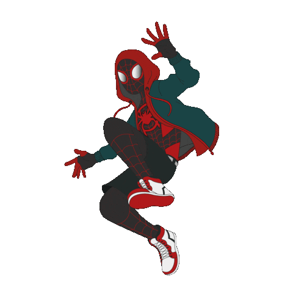

Miles Morales é um personagem presente nos quadrinhos da Marvel Comics, que apareceu pela primeira vez em Ultimate Fallout #4 (Agosto de 2011). Um adolescente negro com ascendência hispânica, Miles é o segundo Homem-Aranha a aparecer em Ultimate Marvel, e com uma continuação no Universo Marvel principal
